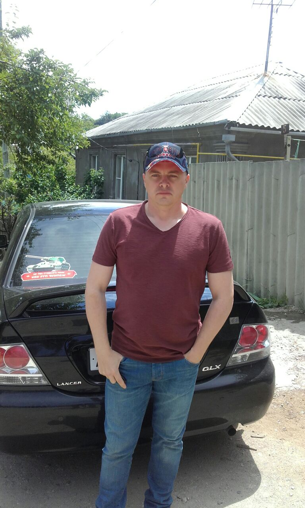

Родился на Чёрном море. После средней школы закончил юридический факультет (уголовное право). Около 5 лет работал торговым агентом в сфере прямых продаж. Последнее время очень заинтересовался программированием. Сейчас изучаю frontend-development.
Зеленский Константин. Разработчик

Обо мне
Навыки
- Новороссийский филиал Краснодарского института МВД
- HTML5, CSS3, JS, Bootstrap 5, Photoshop, Figma.
- Копирайтинг и основы маркетинга
- Word 2019
- Водитель-профессионал с 15-летним стажем
Работа
Последние 10 лет работаю водителем по России. Также работал торговым представителем известной компании по производству кисло-молочной продукции в России. Изучал основы маркетинга, технику продаж, анализ и планирование рынка. Заинтересовался программированием, когда изучал копирайтинг. И теперь моя конечная цель - разработчик мобильных приложений!
Увлечения
- Моя семья
- Футбол
- World of Tanks
- Природа, походы в лес - за грибами, рыбалка
- Наслаждение земной жизнью
Как я становился разработчиком
- 01/11/2021 - начался мой путь к познанию программирования, освоение HTML
- 15/11/2021 - добрался до CSS
- 01/12/2021 - надеюсь изучить базовую основу HTML5 и CSS3
Мои контакты:
E-mail: zelenskiy1978@mail.ru
Instagram: zelkon78